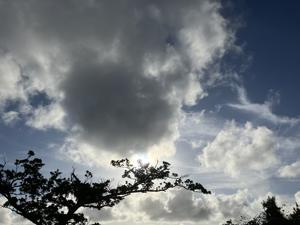
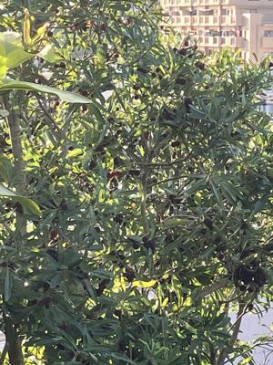

うるがいの話 ある日
最新: いきなり夏モード【うるがいの話 ある日】とは 一日だけのプログです
『うるがいの話』の最新一日だけのプログで、通信料が少なく経済的だ。カニの画像をクリックすると全ての日付が載る『うるがいの話』サイトを表示します
|
|
【うるがいの話】 うるがい(ｳﾙｶﾞｲ urugai)とは、『もずくがに』の名前でとても大きくなります。 |
|---|---|
|
|
【カミマヤーの話】 猫のことを方言でマヤーといいます。カミマヤー（kamimayaa）とは、神の猫のことです。 |
|
【たながぁの音楽】 たながぁ（ﾀﾅｶﾞｰ tanagaa）とは手長えびのことで、何種類かあり大きいのは車 エビぐらいになります。 |

|
【ぶながぁの話】 ぶながぁ(ﾌﾞﾅｶﾞｰ bunagaa)とは、赤い髪の毛、赤い身体、そして身長は１ｍ２０ｃｍ ぐらい、川の蟹を食べているの目撃された。場所は沖縄県国頭郡大宜味村のと ある村僕の隣近所に住んでいる爺さんから、聞いた話です。 |
|
|
【ギーマの話】 ギーマ(giima)とは、山原の里山に咲くスズランに似た、 花を付けます。実は食べられます、 気が付くと口の周りが紫になっています。 |
2025年05月17日 (土）いきなり夏モード
15:46

きのうから突如として、気温が上がる。夏に突入した、梅雨は？な
にか気候変動で九州から梅雨入りしそうである。冬布団を布団バッ
グに入れる。扇風機は、ビンビンだぜ。
『働くお父さんの昔話入門』という本を、図書館から借りた。する
と２０１８年７月１２日（約７年前）の貸し出しシートが、挟まれ
ていた。この本以外に
色の力 消費行動から性的欲求まで、人を動かす色の使い方
マッキンゼー経営の本質
モチベーション3.0 持続する「やる気!」をいかに引き出すか
これらの本を読むタイプの人、苦手である。その昔、職場でこのタ
イプの人ヒラカワくんが、お客さんとの関係を「ウィンウィンの関
係」と会話の中で使った。私が知らないカタカナを使われ、シラと
した。その後、カタカナ辞典を買った（あれ、家にない。捨てたか
前の職場に放置したか）。ま、いまはネット検索があるからネ。貸
し出しシートが挟めれいることは（市立図書館は、結構マメにチェ
ックしているようだが）、この本７年も近く誰も借りなかった。私
は、イントロで放棄した。
完熟したヤマモモの実（黒い）、食いしん坊の私は、なぜ食わない
かと思うのである。
